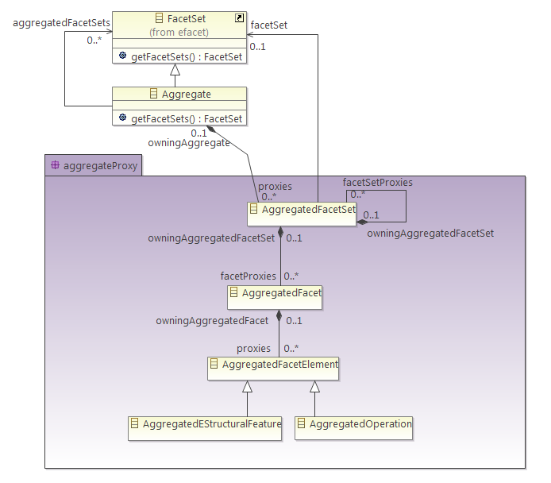

JFace viewers don't work as expected when the same element appears several times in the same viewer. Since we want to be able to display the same elements under several Aggregates displayed in the same viewer, we need proxy elements to represent the multiple appearances of aggregated elements.
Here is the Aggregate metamodel:

The package aggregateProxy contains the metaclasses that define the proxies for elements in a dialog. An Aggregate references AggregatedFacetSet proxies, one for each FacetSet (including Customizations) it aggregates. An AggregatedFacetSet represents a FacetSet, which can itself be an Aggregate, so it can contain other AggregatedFacetSets through the facetSetProxies reference. FacetSets contain Facets, so AggregatedFacetSet contains proxies (AggregatedFacet) for these Facets through the facetProxies reference. Facets contain FacetElements, so AggregatedFacet contains proxies (AggregatedFacetElement) for these FacetElements through its proxies reference.
To use these proxies in a JFace dialog, the content provider must return proxies for aggregated FacetSets, Facets and FacetElements, instead of returning the original element.
This makes it possible to implement the getParent method of the content provider by following the proxy hierarchy upwards.
Copyright © 2012 CEA LIST. All rights reserved. This program and the accompanying materials are made available under the terms of the Eclipse Public License 2.0 which accompanies this distribution, and is available at https://www.eclipse.org/legal/epl-2.0/. Contributors: Nicolas Bros (Mia-Software)